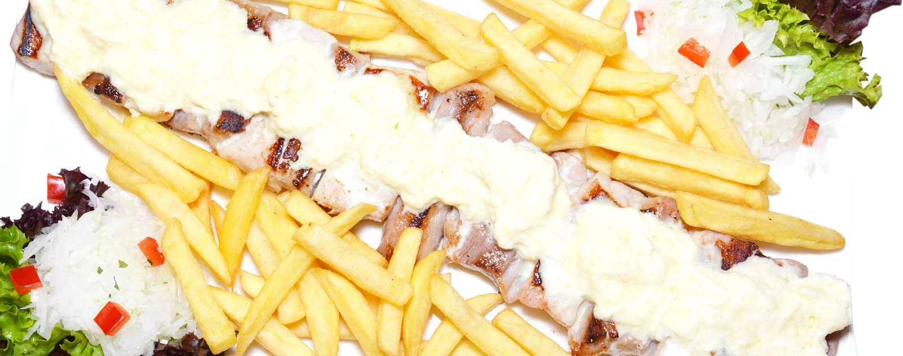

Pljeskavica
Pljeskavica
Gericht aus Faschiertem, auf dem Rost gegrillt – ein traditionelles Rezept aus der Balkanküche.
Seit 2013 in Wien-Ottakring
„Kommen Sie als Gast und gehen Sie als Freund.“
Traditionelle Gerichte aus der Region des ehemaligen Jugoslawiens, ausgesuchte Weine, Live-Orchester an drei Abenden pro Woche – und unser eigener Zustelldienst, wenn Sie lieber zu Hause essen.

Unsere Küche
In unserem Restaurant können Sie sich die traditionellen Gerichte aus der Region des ehemaligen Jugoslawiens schmecken lassen. Was das Essen angeht, sollten Sie unbedingt unsere Spezialitäten vom Holzkohlerost probieren.
Pljeskavica
Gericht aus Faschiertem, auf dem Rost gegrillt – ein traditionelles Rezept aus der Balkanküche.
Sarma
Serbische Kohlrouladen: Weißkohl, gefüllt mit gemischtem Hackfleisch. Sein Aroma erhält das Gericht durch kleingehackte Zwiebeln, Kräuter und Paprikapulver – zubereitet nach dem Rezept unserer Großmütter.
Ćevapi sa kajmakom
Eines der beliebtesten Gerichte aus unserer Küche. Auf dem Rost gegrillt und mit Fladenbrot, rohen Zwiebeln und Rahmsauce serviert. Charakteristisch ist der scharfe Paprika-Geschmack, ergänzt durch Knoblauch.
Juneći biftek
Kalbfleisch, zusammen mit Ei und Kartoffeln auf besondere traditionelle Art zubereitet. Sein Aroma erhält das Gericht durch kleingehackten Knoblauch, Petersilie und weitere Gewürze.
Rebarca sa kajmakom
Gehört zu den ältesten Rezepten unserer traditionellen Küche – und zu den beliebtesten Speisen unseres Restaurants.
Karađorđeva šnicla
Gebackenes Schweinsschnitzel, gefüllt mit Schinken und Rahmsauce – eines der beliebtesten Gerichte unserer traditionellen Küche.
Besonderheiten unserer Küche
Der Küchenchef bringt langjährige Erfahrung mit; durch diese Mischung werden sowohl internationale als auch klassische Gerichte der Balkanküche zubereitet. Den größten Wert legen wir dabei auf die hohe Qualität der Zutaten, um Ihnen nur die besten Gerichte auf dem Teller zu präsentieren.
Vielleicht lernen Sie bei uns auch Neues kennen – wir sind stets bemüht, die beste Küche anzubieten. Gefüllte Fleischlaibchen, Rippchen in Rahmsauce oder gefülltes Schweinskarree vom Holzkohlerost zählen zu den beliebtesten Speisen unseres Restaurants.
Täglich
Jeden Tag ein Menü aus Suppe, Hauptgericht und Salat.
Ab 10:00 Uhr
Um perfekt in den Tag zu starten, darf ein gutes Frühstück nicht fehlen – ein reichhaltiges Angebot erwartet Sie im Restaurant.
Hausgemacht
Eine große Auswahl an hausgemachten Mehlspeisen und Torten.
Ganzjährig
Unser Restaurant ist das ganze Jahr über geöffnet – freundliches Personal inklusive.
Mehr als ein Restaurant
Musik
Unser Orchester spielt für Sie jeden Freitag, Samstag und Sonntag und sorgt für eine angenehme, freundliche Atmosphäre. Sie können sich mit Musik entspannen und bei gutem Wein und Essen den Abend genießen.
Feiern
Geburtstag, Hochzeit, Pensionsfeier: Unser Personal übernimmt die Organisation nach Ihren Wünschen. Die Säle fassen bis zu 80 Gäste.
Lieferung
Lust auf gutes Essen, aber lieber zu Hause? Mit unserem Zustelldienst kommt Ihre Lieblingsspeise direkt aus dem Restaurant zu Ihnen.
Weine
Genießen Sie in unserem Restaurant ausgesuchte Weine aus Österreich und Osteuropa – darunter Tropfen aus den besten Traubensorten des Gebiets um Smederevo und der weiteren Region.
„In jedem Fläschchen, in jedem Glas, in jedem Tröpfchen Wein verbirgt sich eine Geschichte.“ Wein lässt uns an seiner Herkunft und Entstehung teilhaben: Jedes Schlückchen erzählt von einem Land, einem Ort, einem Hauer, seinen Gefühlen und seiner Philosophie.
Gastfreundschaft
„Lieben Sie auch eine gewisse Abwechslung in Ihrer Küche? Dann sind Sie bei uns genau richtig – eine Mischung aus Tradition und Qualität.“